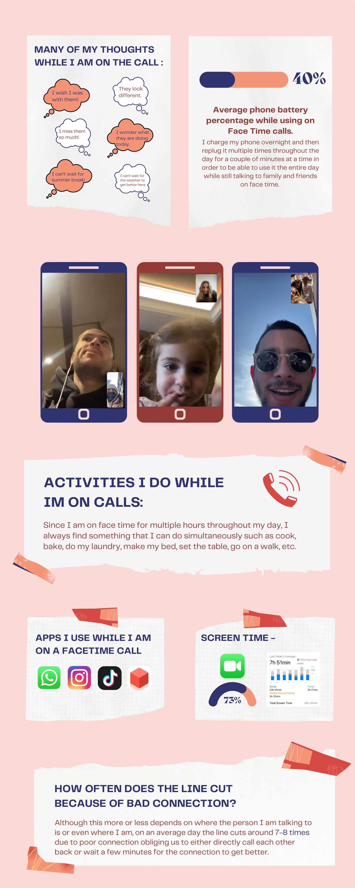
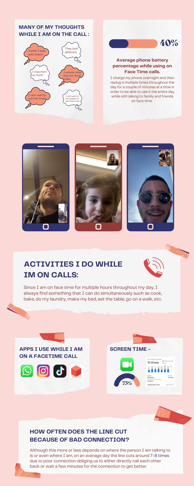
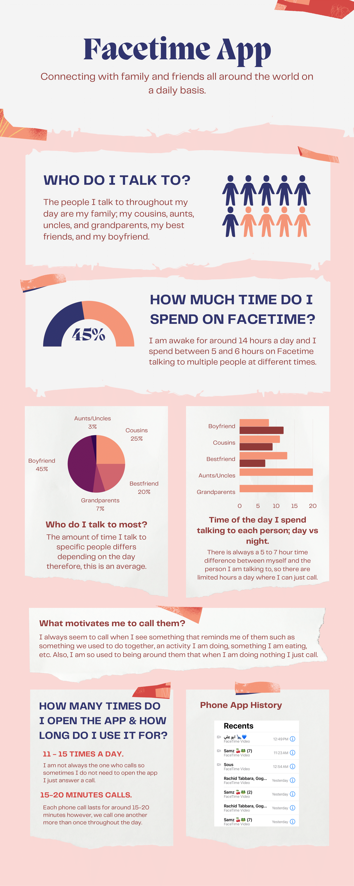
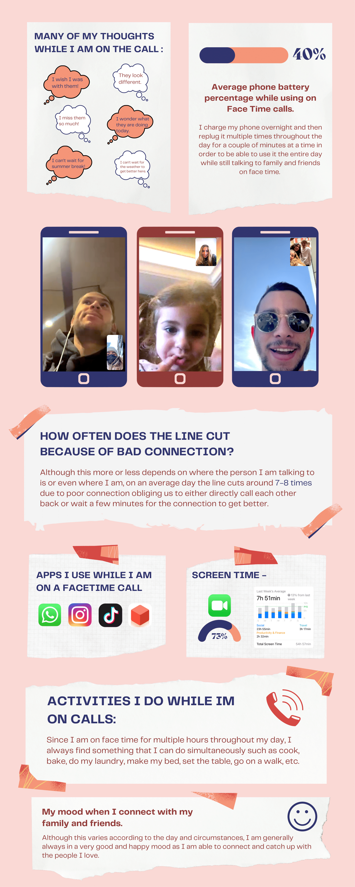

Me and the Screen Process
The objective of this assignment is to push us to engage in self-observation and documentation as a design-based research method. We were all asked to look into our daily lives and our interactions with the digital plaforms we utilize on a daily basis. Then we were to monitor and observe our interactions with this platform over the course of 3-5 days and record both qualitative and quantitative data on it.
After going back and looking at my daily interactions with my phone and the apps on it, I realized that as a student living abroad, facetime is the app I use most to connect with my friends and family around the world. The way I went about collecting information of my interaction with the factime app was by taking notes of my mood, the amount of times I use the app, the people I talk to and their frequency and by taking screenshots of the facetime composition and looking at things such as screen time and recent phone calls.
When I had collected all of my data and felt ready to start making my infrographic, I began to think of its design and decided to go with a very traditional approach. Because of this, I started to research what traditional infrographics looked like and how the information should be displayed on them and slowly began to construct mine.

From the feedback I recieved during the first critique in class where I presented the composition above, I decided that I would need to add another page to my inforgraphic in order for me to hit all the points and be able to show all of my interactions with this app. I also realized that there was a lot of text and not much else to look at so another page would give me the opportunity to include more information and more visuals. In addition a main piece of feedback I recieved had to do with the way I used my fonts and their consistency and I tried my best to adjust that as well.
 

In the final critique, I was advised to try and play with the colors of my pictures inorder for them to match the composition of my inforgraphic in terms of quality and also to try to end the infographic on a more summative note and not with how good or bad the quality of the call was.
 